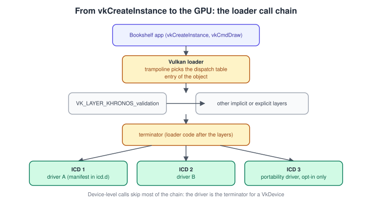
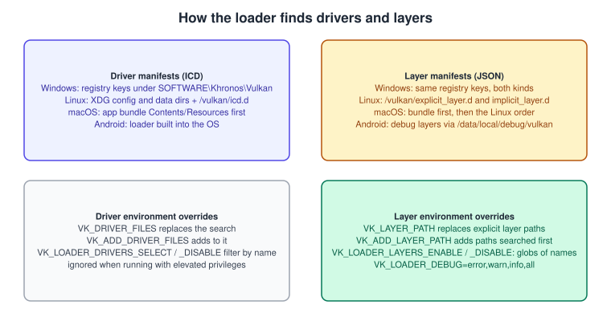
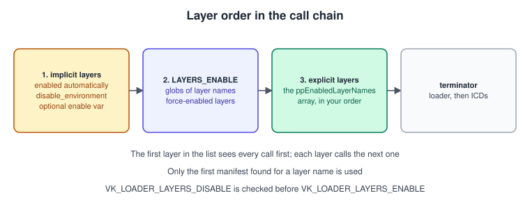
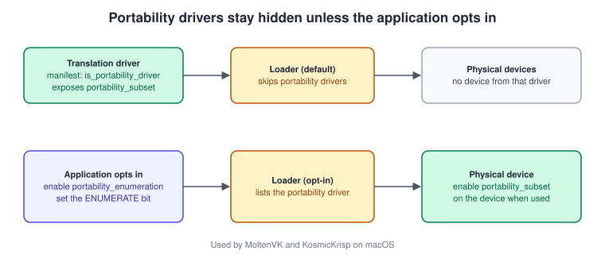

Instances, the Loader and Layers
|
This content was generated with the assistance of AI and should be verified against the official documentation before being relied on in production. |
A Vulkan program does not start by talking to the GPU. It starts by talking to the Vulkan loader, a small library that sits between
your code and every driver and layer installed on the machine. The first object you create, the VkInstance, is the connection to
that loader: it records which version of the API your program expects, which layers are inserted between you and the driver and which
instance-level extensions are switched on. Almost every confusing start-up failure (a missing layer, a device that does not show up,
a validation message that never appears, a crash only on macOS) can be traced to something on this page, so it is worth understanding
the machinery rather than copying a snippet.
The facts were checked in November 2026. The version documented is Vulkan 1.4 (headers 1.4.3xx, the LunarG Vulkan SDK 1.4.363.0
released on 2026-09-29, Windows, Linux and macOS); the Vulkan Bookshelf running example needs Vulkan 1.3 as a minimum and can use
Vulkan 1.4 or the Roadmap 2026 features when the device offers them. The loader documentation used here is the one in the
Khronos Vulkan-Loader repository. Requirements: a Vulkan-capable driver, the loader (installed with the driver on Windows, with
the SDK or the distribution packages on Linux and macOS, part of the operating system on Android) and a C++20 compiler for the C++
examples.
This page covers the Instance, layers, extensions rows of the two classic books, the Vulkan Programming Guide ("VPG", chapter 1) and
the Vulkan Cookbook ("VCB", chapter 1). Both were written for Vulkan 1.0; the sections below say where practice has moved on. Where the
running example is at: this is the first step of the Vulkan Bookshelf (C++20, Vulkan-Hpp RAII, VMA, GLFW or SDL3, Slang shaders with
GLSL and HLSL alternatives): an instance with validation. The toolchain is in
Setting Up the SDK and Toolchain, the messages that validation produces are in
Validation and Debug Utils, and the next object, the device, is in
Physical and Logical Devices. The reason the API asks for this much set-up is
explained in Explicit vs Implicit APIs.
The loader
An application could call a driver directly, but a machine can have several GPUs from several vendors, plus software rasterisers,
plus debugging tools. The loader (vulkan-1.dll on Windows, libvulkan.so.1 on Linux, libvulkan.1.dylib on macOS, built into the
operating system on Android) is the piece that makes that work. It has four jobs:
-
Find drivers. A driver is called an ICD (installable client driver). Each ICD is described by a small JSON manifest; the loader reads them, loads the libraries they name and asks each one for its physical devices.
-
Find layers. Layers are optional libraries, loaded during
vkCreateInstance, that can intercept, inspect or modify Vulkan calls. They are found the same way, through layer manifests, or through the loader settings file written by the Vulkan Configurator. -
Build the call chain. Every Vulkan function you call is first a loader function (a trampoline). The trampoline looks at the first parameter, finds the dispatch table of that object and jumps to the next function in the chain: the first enabled layer, then the next layer, and so on.
-
End the chain. After the last layer comes a loader function called the terminator. For instance-level functions the terminator forwards the call to every driver; for device-level functions the driver of that device is the end of the chain.

The instance dispatch table is created inside vkCreateInstance and the device dispatch table inside vkCreateDevice, which is why
the layers and extensions you enable on the instance cannot be changed afterwards.
Linking to the loader
The Vulkan headers only declare function prototypes, so some code has to provide the functions. There are two ways, and both are described in the Vulkan Guide:
| Method | How | Trade-offs |
|---|---|---|
Direct linking |
Link against |
Simplest. The program refuses to start if no loader is installed. Every call goes through the trampoline and a dispatch-table lookup. |
Indirect linking |
Open the loader at run time with |
Fails gracefully when no Vulkan is installed. The Vulkan Guide describes it as the fastest way to call Vulkan functions, because you
can fetch device-level function pointers directly with |
vkGetInstanceProcAddr can return any function. vkGetDeviceProcAddr only returns device-level functions, but the pointers it returns
belong to one device and have a shorter call chain. The recommended pattern is to fetch instance extension functions with the first and
device extension functions with the second.
Where the books are outdated. VCB chapter 1 shows the program loading the library and every function by hand, one macro entry per
function. That is still legal, but nobody writes it any more: volk or the Vulkan-Hpp dispatcher does the same job from the headers.
The platform notes in both books (Windows and Linux only) also pre-date the SDK for macOS and the Android loader; see
Vulkan on Apple and
Vulkan on Android.
How drivers and layers are discovered
Discovery is driven entirely by manifest files, plus a few operating-system specific places.

| Platform | Driver manifests (ICD) | Layer manifests |
|---|---|---|
Windows |
Registry values under |
Registry values under |
Linux |
The XDG directories ( |
The same directories with |
macOS |
The application bundle ( |
The same: bundle first, then the Linux order. |
Android |
The loader is part of the operating system and picks the system driver. |
Not manifests. Debuggable builds can use layers pushed to |
The environment variables below are the quickest way to find out what the loader is doing. All the path and file variables are ignored when the program runs with elevated privileges, which is a security measure and a frequent source of "it works as a normal user".
| Variable | Effect |
|---|---|
|
A comma-separated list of levels: |
|
Replace the driver search with these manifest files or folders (needs headers 1.3.207 or newer). |
|
Comma-separated globs matched against manifest file names. Disable is checked first. Selecting nothing leaves you with no driver. |
|
Replace the explicit layer search paths. If it is set, |
|
Add paths that are searched before the standard ones. |
|
The same two ideas for implicit layers. |
|
Comma-separated globs of layer names to enable, for example |
|
Comma-separated globs of layer names to disable. Checked before the enable list, so |
Shell examples for the Bookshelf:
# Linux or macOS: see what the loader finds and which layers it will use
VK_LOADER_DEBUG=layer,driver ./bookshelf
# Windows (cmd.exe)
set VK_LOADER_DEBUG=all
bookshelf.exe
# Force the validation layer on without touching the code
VK_LOADER_LAYERS_ENABLE='*validation' ./bookshelf
# Use only one driver while testing (path to its manifest)
VK_DRIVER_FILES=/usr/share/vulkan/icd.d/lvp_icd.json ./bookshelf
# Which layers and instance extensions does this machine offer?
vulkaninfo --summaryThe manifest files
A driver manifest is tiny. This is the shape of one (the library name is a placeholder):
{
"file_format_version": "1.0.1",
"ICD": {
"library_path": "libexample_vulkan_driver.so",
"api_version": "1.4.0",
"is_portability_driver": false
}
}api_version is the highest Vulkan version the driver supports. library_path is a file name, a path relative to the manifest or an
absolute path. is_portability_driver (manifest format 1.0.1 and newer) marks a driver that exposes devices through
VK_KHR_portability_subset; see the portability section below.
A layer manifest names the layer and its library:
{
"file_format_version": "1.2.1",
"layer": {
"name": "VK_LAYER_BOOKSHELF_frame_stats",
"type": "GLOBAL",
"library_path": "./libVkLayer_bookshelf_frame_stats.so",
"api_version": "1.4.0",
"implementation_version": "1",
"description": "Counts draw calls per frame (example layer)",
"disable_environment": { "BOOKSHELF_FRAME_STATS_DISABLE": "1" }
}
}The fields: name is the unique name you put in ppEnabledLayerNames; type is GLOBAL or INSTANCE (the old DEVICE type is
skipped, see below); library_path is required; api_version and implementation_version describe the layer; description is shown
by tools; functions can rename the loader negotiation entry point; instance_extensions and device_extensions list the extensions
the layer implements (with name and spec_version); and enable_environment and disable_environment control implicit layers.
Only the first manifest found for a layer name is used, and the order of files inside one directory is not specified.
Layers
A layer is a library that implements the same functions as Vulkan and forwards them to the next layer. Because it sees every call, a layer can validate arguments, record a trace, draw an overlay, count objects or emulate an extension. The Bookshelf uses exactly one layer while developing: the Khronos validation layer.
Explicit and implicit layers
-
An explicit layer is off until the program asks for it by name in
VkInstanceCreateInfo::ppEnabledLayerNames, or until the user enables it throughVK_LOADER_LAYERS_ENABLEor the Vulkan Configurator.VK_LAYER_KHRONOS_validationis explicit. -
An implicit layer is on whenever the loader finds its manifest, unless it is disabled. Drivers and tools use implicit layers to hook every Vulkan program on the machine (overlays, capture tools, vendor compatibility layers). A manifest for an implicit layer must define
disable_environment, so it can always be turned off; if it definesenable_environment, it only loads when that variable is set. Since loader 1.3.228 implicit layers load whatever API version the program asks for.

The enabled layers are ordered as implicit layers first, then the layers selected by VK_LOADER_LAYERS_ENABLE, then the other explicit
layers in the order of ppEnabledLayerNames. The first layer in the chain sees a call first.
Instance layers only
Vulkan 1.0 also had device layers, enabled in VkDeviceCreateInfo. They were deprecated early and the Vulkan Guide says to avoid
them: the loader skips manifests of type DEVICE, and a layer simply applies to the instance and everything created from it.
VkDeviceCreateInfo::enabledLayerCount should be zero and ppEnabledLayerNames null. VPG chapter 1 describes device layers as a
normal feature; treat that text as historical.
Layers that have changed
The set of layers has been simplified since the books were written:
| In VPG and VCB (Vulkan 1.0, 2016-2017) | Today |
|---|---|
A set of separate layers: |
One layer, |
Layers chosen in code or by environment variables only |
The Vulkan Configurator (vkconfig) in the SDK writes a loader settings file ( |
The override meta-layer written by tools |
Replaced by the loader settings file. Meta-layers ( |
Validation is the topic of its own page, Validation and Debug Utils. For the
settings of any layer from code, see VK_EXT_layer_settings there.
The instance
vkCreateInstance takes a VkInstanceCreateInfo. Its parts, with every option that matters:
| Field | Meaning | Notes |
|---|---|---|
|
The structure type and the extension chain. |
Every structure begins with these. |
|
Instance creation flags. |
The only one you normally set is |
|
A |
May be null, which the specification treats like API version 1.0; always provide it. |
|
The layers to insert. |
If a name is not found, |
|
Instance extensions to enable. |
If one is unknown, creation fails with |
The application info and the API version
VkApplicationInfo::apiVersion is the highest Vulkan version your program is written to use. It is a packed integer with four parts:
variant, major, minor and patch, built with VK_MAKE_API_VERSION(variant, major, minor, patch); the constants VK_API_VERSION_1_3
and VK_API_VERSION_1_4 are defined for you. Three rules prevent most confusion:
-
The patch number is ignored for compatibility decisions. Asking for
1.3.0or1.3.250is the same. -
The instance version and the device version are different things.
vkEnumerateInstanceVersion(Vulkan 1.1 and newer loaders) returns the version of the loader and instance-level functionality. Each physical device reports its own version inVkPhysicalDeviceProperties::apiVersion. Using a Vulkan 1.3 device function needs a device that reports at least 1.3, and the version you put inapiVersionis a statement about what you will use, not something that upgrades the device. -
Features that are core in a version are available without an extension only if you target that version. On a 1.3 device you can use dynamic rendering and synchronization2 as core functions (without the
KHRsuffix) as long as you enabled the matching features, see Versions, Profiles and Extensions.
VK_MAKE_VERSION from the 1.0 headers has no variant field and is deprecated in favour of VK_MAKE_API_VERSION; the books use the old
macro. The Vulkan Bookshelf asks for VK_API_VERSION_1_3 and switches to 1.4 paths only after checking the device.
A complete C++20 example with Vulkan-Hpp RAII
The following function creates the Bookshelf instance. It checks the loader version, checks that the layers and extensions exist
before asking for them (so the program can report a useful message instead of an error code), adds the portability extension when it
is offered, and attaches a debug messenger description so creation itself is covered. Define VULKAN_HPP_NO_CONSTRUCTORS before
including the header to use C++20 designated initialisers, as the Khronos Vulkan Tutorial does.
#define VULKAN_HPP_NO_CONSTRUCTORS
#include <vulkan/vulkan_raii.hpp>
#include <GLFW/glfw3.h>
#include <algorithm>
#include <cstring>
#include <iostream>
#include <span>
#include <stdexcept>
#include <string>
#include <vector>
namespace {
VKAPI_ATTR vk::Bool32 VKAPI_CALL debugCallback(
vk::DebugUtilsMessageSeverityFlagBitsEXT severity,
vk::DebugUtilsMessageTypeFlagsEXT type,
const vk::DebugUtilsMessengerCallbackDataEXT* data, void*) {
std::cerr << "[vulkan] " << vk::to_string(severity) << " " << data->pMessage << '\n';
return vk::False; // never abort the call that caused the message
}
bool hasLayer(std::span<const vk::LayerProperties> all, const char* name) {
return std::ranges::any_of(all, [&](const auto& p) { return std::strcmp(p.layerName, name) == 0; });
}
bool hasExtension(std::span<const vk::ExtensionProperties> all, const char* name) {
return std::ranges::any_of(all, [&](const auto& p) { return std::strcmp(p.extensionName, name) == 0; });
}
} // namespace
vk::raii::Instance createInstance(const vk::raii::Context& context, bool enableValidation) {
// 1. The loader tells us the instance version it can offer.
const uint32_t loaderVersion = context.enumerateInstanceVersion();
if (VK_API_VERSION_MAJOR(loaderVersion) == 1 && VK_API_VERSION_MINOR(loaderVersion) < 3) {
throw std::runtime_error("The Bookshelf needs a Vulkan 1.3 loader");
}
// 2. Application info: a statement of what we will use.
vk::ApplicationInfo appInfo{
.pApplicationName = "Vulkan Bookshelf",
.applicationVersion = VK_MAKE_API_VERSION(0, 0, 1, 0),
.pEngineName = "Bookshelf",
.engineVersion = VK_MAKE_API_VERSION(0, 0, 1, 0),
.apiVersion = VK_API_VERSION_1_3};
// 3. Layers: only the Khronos validation layer, only if it is installed.
std::vector<const char*> layers;
const auto available = context.enumerateInstanceLayerProperties();
if (enableValidation) {
if (hasLayer(available, "VK_LAYER_KHRONOS_validation")) {
layers.push_back("VK_LAYER_KHRONOS_validation");
} else {
std::cerr << "Validation layer not installed: install the Vulkan SDK\n";
}
}
// 4. Extensions: what the window system needs, plus debug utils and portability.
uint32_t glfwCount = 0;
const char** glfwExt = glfwGetRequiredInstanceExtensions(&glfwCount);
std::vector<const char*> extensions(glfwExt, glfwExt + glfwCount);
const auto offered = context.enumerateInstanceExtensionProperties();
if (!layers.empty() && hasExtension(offered, VK_EXT_DEBUG_UTILS_EXTENSION_NAME)) {
extensions.push_back(VK_EXT_DEBUG_UTILS_EXTENSION_NAME);
}
vk::InstanceCreateFlags flags{};
if (hasExtension(offered, VK_KHR_PORTABILITY_ENUMERATION_EXTENSION_NAME)) {
extensions.push_back(VK_KHR_PORTABILITY_ENUMERATION_EXTENSION_NAME);
flags |= vk::InstanceCreateFlagBits::eEnumeratePortabilityKHR;
}
for (const char* e : extensions) {
if (!hasExtension(offered, e)) throw std::runtime_error(std::string("Missing instance extension ") + e);
}
// 5. One pNext structure so messages from vkCreateInstance itself are delivered.
vk::DebugUtilsMessengerCreateInfoEXT messengerInfo{
.messageSeverity = vk::DebugUtilsMessageSeverityFlagBitsEXT::eWarning |
vk::DebugUtilsMessageSeverityFlagBitsEXT::eError,
.messageType = vk::DebugUtilsMessageTypeFlagBitsEXT::eGeneral |
vk::DebugUtilsMessageTypeFlagBitsEXT::eValidation |
vk::DebugUtilsMessageTypeFlagBitsEXT::ePerformance,
.pfnUserCallback = &debugCallback};
vk::StructureChain<vk::InstanceCreateInfo, vk::DebugUtilsMessengerCreateInfoEXT> chain{
{.flags = flags,
.pApplicationInfo = &appInfo,
.enabledLayerCount = static_cast<uint32_t>(layers.size()),
.ppEnabledLayerNames = layers.data(),
.enabledExtensionCount = static_cast<uint32_t>(extensions.size()),
.ppEnabledExtensionNames = extensions.data()},
messengerInfo};
if (layers.empty()) chain.unlink<vk::DebugUtilsMessengerCreateInfoEXT>();
// 6. Create. The RAII object destroys the instance when it goes out of scope.
return vk::raii::Instance{context, chain.get<vk::InstanceCreateInfo>()};
}
int main() {
if (!glfwInit() || !glfwVulkanSupported()) return 1;
vk::raii::Context context; // loads the loader and the global functions
try {
vk::raii::Instance instance = createInstance(context, true);
std::cout << "Instance created\n";
} catch (const vk::SystemError& e) {
std::cerr << "Vulkan error: " << e.what() << '\n'; // e.g. ErrorIncompatibleDriver
return 1;
}
glfwTerminate();
}Source: Vulkan Tutorial: Instance
Notes on the example. vk::raii::Context opens the loader through Vulkan-Hpp’s dynamic loader and resolves the global functions
(vkEnumerateInstanceVersion, vkEnumerateInstanceLayerProperties, vkEnumerateInstanceExtensionProperties, vkCreateInstance),
none of which needs an instance. Because the pNext chain only contains the debug messenger when a layer is active, the code unlinks
it otherwise. With SDL3 replace the GLFW call with SDL_Vulkan_GetInstanceExtensions(&count). The C++ language features used here
(RAII and ownership) are explained in
Memory Management and Smart Pointers; Vulkan-Hpp itself is
covered in Vulkan-Hpp, RAII and C++ Bindings.
The same in C with volk
For programs that use the C API, volk loads the loader at run time and then the instance-level and device-level function pointers.
#define VOLK_IMPLEMENTATION
#include "volk.h"
#include <GLFW/glfw3.h>
#include <stdio.h>
#include <stdlib.h>
#include <string.h>
VkInstance create_instance(void) {
if (volkInitialize() != VK_SUCCESS) { /* finds the loader, no link-time dependency */
fprintf(stderr, "No Vulkan loader found\n");
exit(1);
}
uint32_t version = VK_API_VERSION_1_0;
vkEnumerateInstanceVersion(&version); /* available on Vulkan 1.1+ loaders */
if (version < VK_API_VERSION_1_3) { fprintf(stderr, "Vulkan 1.3 needed\n"); exit(1); }
VkApplicationInfo app = {
.sType = VK_STRUCTURE_TYPE_APPLICATION_INFO,
.pApplicationName = "Vulkan Bookshelf",
.applicationVersion = VK_MAKE_API_VERSION(0, 0, 1, 0),
.pEngineName = "Bookshelf",
.engineVersion = VK_MAKE_API_VERSION(0, 0, 1, 0),
.apiVersion = VK_API_VERSION_1_3,
};
uint32_t glfw_count = 0;
const char** glfw_ext = glfwGetRequiredInstanceExtensions(&glfw_count);
const char* extensions[16];
uint32_t ext_count = 0;
for (uint32_t i = 0; i < glfw_count && ext_count < 14; ++i) extensions[ext_count++] = glfw_ext[i];
extensions[ext_count++] = VK_EXT_DEBUG_UTILS_EXTENSION_NAME;
const char* layers[] = { "VK_LAYER_KHRONOS_validation" };
VkInstanceCreateInfo info = {
.sType = VK_STRUCTURE_TYPE_INSTANCE_CREATE_INFO,
.pApplicationInfo = &app,
.enabledLayerCount = 1,
.ppEnabledLayerNames = layers,
.enabledExtensionCount = ext_count,
.ppEnabledExtensionNames = extensions,
};
VkInstance instance = VK_NULL_HANDLE;
VkResult r = vkCreateInstance(&info, NULL, &instance);
if (r == VK_ERROR_LAYER_NOT_PRESENT) fprintf(stderr, "Validation layer missing\n");
if (r == VK_ERROR_EXTENSION_NOT_PRESENT) fprintf(stderr, "Instance extension missing\n");
if (r == VK_ERROR_INCOMPATIBLE_DRIVER) fprintf(stderr, "No driver supports this API version\n");
if (r != VK_SUCCESS) exit(1);
volkLoadInstance(instance); /* instance-level function pointers */
return instance;
}Source: volk README and vkCreateInstance reference page
Enumerating what the machine offers
Printing the layers and extensions is the quickest diagnostic. The vulkaninfo tool from the SDK does it, and so can a few lines of
code:
vk::raii::Context context;
for (const auto& l : context.enumerateInstanceLayerProperties())
std::cout << l.layerName << " (spec " << VK_API_VERSION_MAJOR(l.specVersion) << '.'
<< VK_API_VERSION_MINOR(l.specVersion) << ") " << l.description << '\n';
for (const auto& e : context.enumerateInstanceExtensionProperties()) // loader, implicit layers, drivers
std::cout << e.extensionName << " revision " << e.specVersion << '\n';
for (const auto& e : context.enumerateInstanceExtensionProperties(std::string("VK_LAYER_KHRONOS_validation")))
std::cout << " from validation: " << e.extensionName << '\n'; // extensions of one layerWhen the layer name is null the call returns the extensions provided by the loader, the implicit layers and the drivers. A layer name limits the result to that layer. The loader removes duplicates.
Portability enumeration
Some Vulkan drivers are not fully conformant to the specification: they translate Vulkan to another API and cannot implement every
feature. The best-known ones are MoltenVK and KosmicKrisp on Apple platforms. Devices of such drivers expose the
VK_KHR_portability_subset device extension and are hidden from enumeration by default, so a program that does not know about the
subset cannot use one by accident.

The opt-in has three parts:
-
Enable the instance extension
VK_KHR_portability_enumeration. -
Set
VK_INSTANCE_CREATE_ENUMERATE_PORTABILITY_BIT_KHRinVkInstanceCreateInfo::flags(the example above does both together). -
When you create a device from such a physical device, enable
VK_KHR_portability_subset, and respect the features and limits it reports (see Physical and Logical Devices).
Without the flag, the loader skips the drivers whose manifest sets is_portability_driver, and on a Mac with only MoltenVK or
KosmicKrisp installed, vkCreateInstance fails with
VK_ERROR_INCOMPATIBLE_DRIVER. Both VPG and VCB pre-date this extension (they have nothing for Metal either); code taken from them will not find a device on macOS. The difference between the two Apple drivers,
and the macOS 26 requirement of KosmicKrisp, are in
Vulkan on Apple: MoltenVK and KosmicKrisp.
Source: VK_KHR_portability_enumeration
Errors from instance creation
| Result | Typical cause | What to do |
|---|---|---|
|
No driver was found, or none supports the requested |
Run with |
|
A name in |
List layers with |
|
An instance extension is not provided by the loader, a layer or a driver. A common slip is passing a device extension. |
Check against |
|
A driver or layer failed to initialise. |
|
|
Rare at this stage. |
Check for a broken layer library. |
Common mistakes
-
Enabling a layer or extension without checking that it exists, and then treating the error code as a mystery. Query first, report by name.
-
Leaving validation enabled in a release build. The layers reduce performance noticeably and are meant for development only.
-
Passing a device extension (a swapchain function, for example) in the instance list.
-
Setting
apiVersionto a version that the code does not use, or to one newer than the loader, and then gettingVK_ERROR_INCOMPATIBLE_DRIVERon older machines. -
Forgetting that the path environment variables are ignored for elevated programs, so a test run as an administrator behaves differently.
-
Keeping the
VkInstancealive after the window system or the loader library is unloaded. With RAII, declare the context before the instance so destruction happens in the right order. -
Reading the books literally: the
VK_LAYER_LUNARG_*layers, device layers,VK_MAKE_VERSIONand a hand-written loader are all historical.
Performance notes
Instance creation is a start-up cost: the loader reads every manifest and loads every driver library, and an unusually slow start
usually comes from a driver that is slow to initialise or an implicit layer that does work on load. VK_LOADER_DEBUG=driver,layer
shows the time-consuming entries. At run time the cost of the loader is the trampoline per call; direct device-level function
pointers (volk’s volkLoadDevice or the Vulkan-Hpp device dispatcher) bypass it, which matters for programs that record very many
commands per frame.
What changed recently
| Date or version | Change |
|---|---|
Vulkan 1.1 (2018) |
|
SDK 1.1.106 |
The single |
Vulkan headers 1.3.207 and 1.3.234 |
|
Loader 1.3.228 |
Implicit layers load regardless of the application’s API version. |
Vulkan 1.4 (2024-12-03) |
New core version. Instance creation is unchanged; the loader and |
Vulkan-Headers 1.4.366 (2026) |
Meta-layers ( |
SDK 1.4.363.0 (2026-09-29) |
Latest SDK at the time of writing for Windows, Linux and macOS; includes KosmicKrisp for macOS. |
See also the older-guides comparison and the version ladder in Versions, Profiles and Extensions. In the other sub-sections, the equivalent first step is a context and window in OpenGL: Contexts, Windows and Loaders and the device in the Metal section. The first-draw procedure that builds on this page is in Bookshelf 1: From Triangle to Textured Book.
References
-
Vulkan Guide, Loader: https://docs.vulkan.org/guide/latest/loader.html
-
Vulkan Guide, Layers: https://docs.vulkan.org/guide/latest/layers.html
-
Vulkan Guide, Validation Overview: https://docs.vulkan.org/guide/latest/validation_overview.html
-
Vulkan Loader repository documentation (Interface Architecture, Application Interface, Layer Interface, Driver Interface): https://github.com/KhronosGroup/Vulkan-Loader/tree/main/docs
-
Vulkan Specification,
vkCreateInstance: https://registry.khronos.org/vulkan/specs/latest/man/html/vkCreateInstance.html -
VK_KHR_portability_enumeration: https://docs.vulkan.org/refpages/latest/refpages/source/VK_KHR_portability_enumeration.html -
Khronos Vulkan Tutorial: https://docs.vulkan.org/tutorial/latest/00_Introduction.html
-
LunarG Vulkan SDK documentation: https://vulkan.lunarg.com/doc/sdk
-
Vulkan Programming Guide (publisher page): https://www.informit.com/store/vulkan-programming-guide-the-official-guide-to-learning-9780134464541
-
Vulkan Cookbook (publisher page): https://www.packtpub.com/en-us/product/vulkan-cookbook-9781786468154